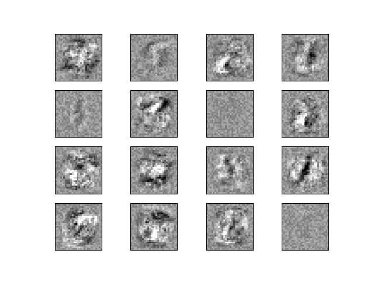

Note
Go to the end to download the full example code or to run this example in your browser via Binder
Visualization of MLP weights on MNIST¶
Sometimes looking at the learned coefficients of a neural network can provide insight into the learning behavior. For example if weights look unstructured, maybe some were not used at all, or if very large coefficients exist, maybe regularization was too low or the learning rate too high.
This example shows how to plot some of the first layer weights in a MLPClassifier trained on the MNIST dataset.
The input data consists of 28x28 pixel handwritten digits, leading to 784 features in the dataset. Therefore the first layer weight matrix has the shape (784, hidden_layer_sizes[0]). We can therefore visualize a single column of the weight matrix as a 28x28 pixel image.
To make the example run faster, we use very few hidden units, and train only for a very short time. Training longer would result in weights with a much smoother spatial appearance. The example will throw a warning because it doesn’t converge, in this case this is what we want because of resource usage constraints on our Continuous Integration infrastructure that is used to build this documentation on a regular basis.
Iteration 1, loss = 0.44139186
Iteration 2, loss = 0.19174891
Iteration 3, loss = 0.13983521
Iteration 4, loss = 0.11378556
Iteration 5, loss = 0.09443967
Iteration 6, loss = 0.07846529
Iteration 7, loss = 0.06506307
Iteration 8, loss = 0.05534985
Training set score: 0.986429
Test set score: 0.953061
import warnings
import matplotlib.pyplot as plt
from sklearn.datasets import fetch_openml
from sklearn.exceptions import ConvergenceWarning
from sklearn.model_selection import train_test_split
from sklearn.neural_network import MLPClassifier
# Load data from https://www.openml.org/d/554
X, y = fetch_openml(
"mnist_784", version=1, return_X_y=True, as_frame=False, parser="pandas"
)
X = X / 255.0
# Split data into train partition and test partition
X_train, X_test, y_train, y_test = train_test_split(X, y, random_state=0, test_size=0.7)
mlp = MLPClassifier(
hidden_layer_sizes=(40,),
max_iter=8,
alpha=1e-4,
solver="sgd",
verbose=10,
random_state=1,
learning_rate_init=0.2,
)
# this example won't converge because of resource usage constraints on
# our Continuous Integration infrastructure, so we catch the warning and
# ignore it here
with warnings.catch_warnings():
warnings.filterwarnings("ignore", category=ConvergenceWarning, module="sklearn")
mlp.fit(X_train, y_train)
print("Training set score: %f" % mlp.score(X_train, y_train))
print("Test set score: %f" % mlp.score(X_test, y_test))
fig, axes = plt.subplots(4, 4)
# use global min / max to ensure all weights are shown on the same scale
vmin, vmax = mlp.coefs_[0].min(), mlp.coefs_[0].max()
for coef, ax in zip(mlp.coefs_[0].T, axes.ravel()):
ax.matshow(coef.reshape(28, 28), cmap=plt.cm.gray, vmin=0.5 * vmin, vmax=0.5 * vmax)
ax.set_xticks(())
ax.set_yticks(())
plt.show()
Total running time of the script: (0 minutes 4.058 seconds)